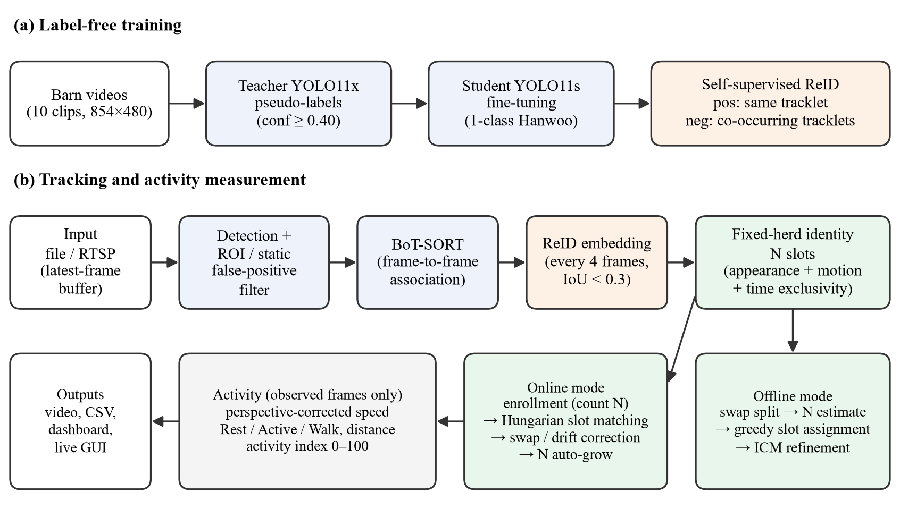
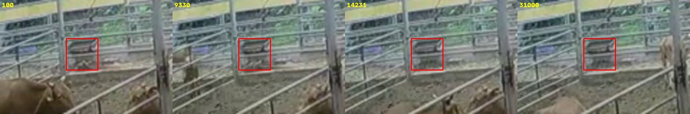
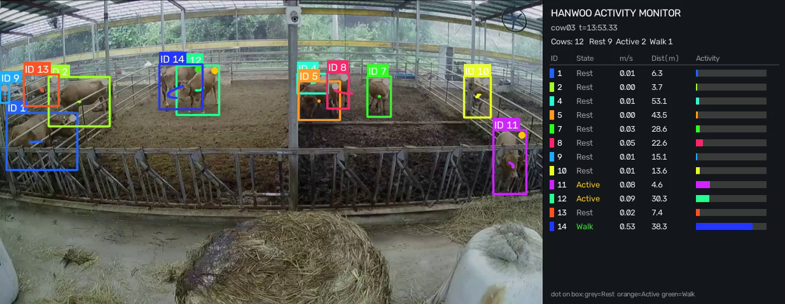
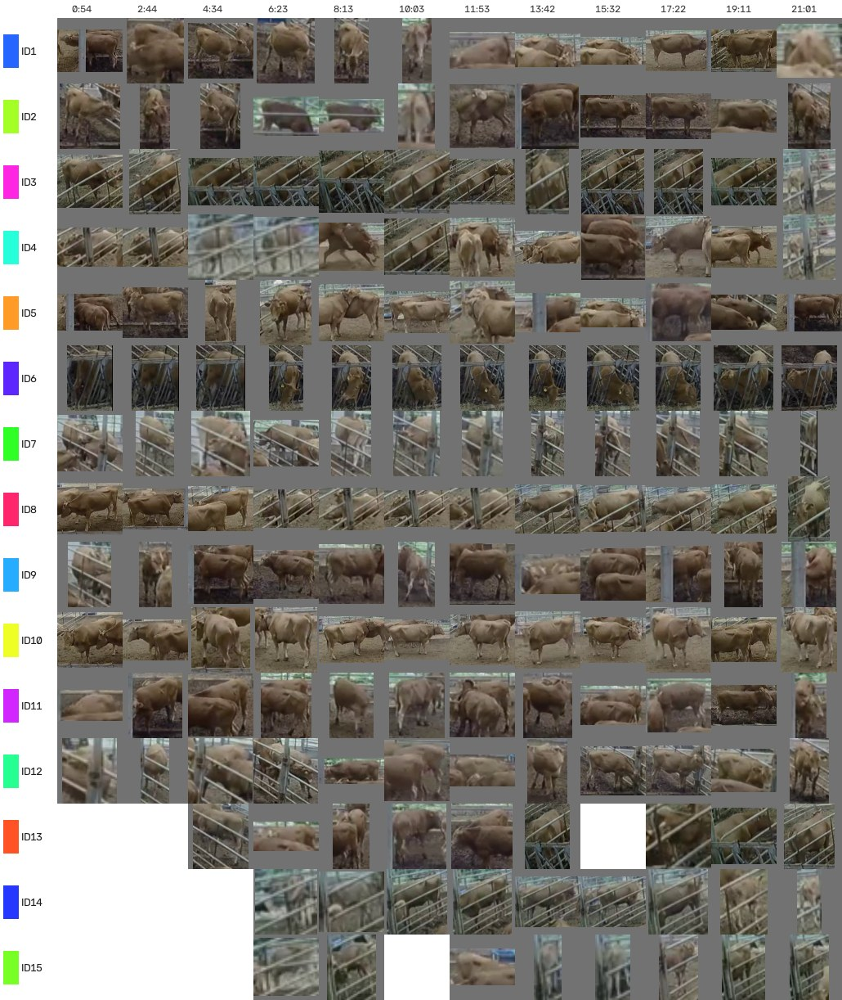

Paper: Fixed-Herd Constraint and Self-Supervised ReID
This is an English rendering of a paper prepared in Korean for the Journal of the Korea Academia-Industrial cooperation Society, summarizing the algorithms of this course (Lessons 07b and 12). It combines a fixed herd size constraint, self-supervised ReID based on co-occurrence, enrollment-based online ID maintenance and automatic detection of static false positives into a single system; Section 2 sets out what it shares with, and how it differs from, prior work. The content corresponds to the Korean HWP manuscript prepared for submission.
Real-Time Individual Tracking and Activity Measurement of Hanwoo Cattle in Barns using a Fixed-Herd Constraint and Self-Supervised Re-Identification
Young-Joon Cho
Department of AI Application Software, Bundang Convergence Technology Campus of Korea Polytechnic
Keywords: Hanwoo, Multi-Object Tracking, Re-Identification, Fixed-Herd Constraint, Activity Monitoring, Self-Supervised Learning
1. Introduction
With the aging of livestock farmers and a shrinking workforce, demand for video-based, contact-free livestock monitoring is growing. Individual activity is an indicator that gives early warning of estrus, disease and problems in feeding management; in previous work, the author collected Hanwoo activity data from barn videos to predict estrus[1] and detected mounting behavior with a vision-language model[2]. For such analyses to be meaningful, the same animal must keep the same ID throughout the entire video.
However, multi-object tracking (MOT) in barn videos poses difficulties that differ from tracking people. Hanwoo have nearly identical coat colors and are hard to distinguish by appearance, and tracks are frequently broken by occlusion from fences and pillars, overlap between animals, and long periods spent lying down. In the 22-minute video of this study, a general-purpose tracker produced 272 IDs for about 15 animals, and 29 still remained after stitching broken tracks by position and color. When an ID is fragmented, one animal's activity is split across several IDs; conversely, when it is mixed with another animal, incorrect values are recorded.
This paper actively exploits the fact that a barn is a closed space with a fixed number of animals. The main contributions are as follows. First, a Hanwoo detector is trained with pseudo-labels generated by a large detection model, and a re-identification (ReID) model is trained without manual labels by using, as negative pairs, the fact that tracks seen together at the same moment must belong to different animals. Second, we propose an offline algorithm that assigns every track to exactly N animal slots, and an online algorithm that counts the herd by itself, enrolls appearances and then maintains IDs in real time. Third, detection zones and automatic detection of static false positives solve the problem of background objects stealing IDs, and computing activity only from observed frames removes false movement paths caused by interpolated boxes. Fourth, the system is implemented as a program that accepts file and RTSP camera input and allows parameters to be adjusted in real time.
2. Related Work
2.1 Detection and tracking of livestock in barns
In Korea, a study analyzed Hanwoo movement and degree of clustering in real time using YOLOX detection and OC-SORT tracking[3], and more recently MTW-Repair, which re-links broken tracks over multiple temporal windows in high-density Hanwoo barns, was proposed[4]. That study reported that adding an appearance model trained on person data (OSNet) brought only marginal accuracy gains, which shows the need for an appearance model dedicated to Hanwoo. Among general-purpose trackers, ByteTrack[5] and BoT-SORT[6] are widely used.
2.2 Fixed herd size constraint
The condition that the number of animals in a closed pen is constant has been used in previous studies. Li et al. prevented the creation of new trajectories beyond an upper bound set by the maximum ID in recent frames when tracking beef cattle[7]; Wang et al. imposed a constraint that no new ID is created beyond the total number of pigs in a pen[8]; and Yang et al. used the total number of animals as a threshold for ID increase to perform 24-hour tracking[9]. These methods use the herd size only as an 'upper bound on new ID creation' and assume that it is known in advance. This study differs in that it estimates the herd size from the video itself, requires every track to be assigned to one of N slots, and jointly applies a temporal exclusivity constraint (an animal cannot be in two places at the same time) and a reachable-distance constraint.
2.3 Self-supervised learning for livestock re-identification
Holstein dairy cows have distinct black-and-white patterns, and individual identification based on metric learning has achieved high accuracy[10]. Gao et al. proposed self-supervised learning that uses video tracks as positive sets and cows from other videos as negative sets[11]. However, drawing negatives from other videos can include the same cow from the same barn as a negative. This study avoids the problem by using as negatives only 'tracks seen together at the same moment' within the same video, and applies the approach to Hanwoo, which have no coat patterns. Our survey of prior work found no case that combines fixed-herd slot assignment, co-occurrence-based self-supervised ReID, herd size estimation during an enrollment phase and automatic detection of static false positives for real-time tracking of Hanwoo.
3. Proposed System
3.1 System overview
Fig. 1 shows the structure of the proposed system. The training stage (a) builds the detector and ReID model without manual labels. The tracking stage (b) detects cattle in the input video, removes spurious boxes with the detection zones and the static false-positive filter, and builds frame-to-frame tracks with BoT-SORT. ReID embeddings are attached to tracks every 4 frames, and fixed-herd assignment determines the final IDs. Saved videos are processed in offline mode and camera streams in online mode.

3.2 Detector training with pseudo-labels
A COCO-pretrained YOLO11x[12] was used as the teacher model to generate pseudo-labels[13] for 1,097 frames extracted from the 10 videos. Only boxes with confidence of 0.40 or higher were used as labels, and frames with many ambiguous boxes between 0.15 and 0.40 were excluded. With these labels, YOLO11s was fine-tuned as the student model for a single Hanwoo class[14]. The detector runs at an input size of 960 px, and because the student model is lighter than the teacher model it is used for real-time processing.
3.3 Self-supervised ReID using the co-occurrence constraint
The ReID model takes an ImageNet-pretrained ResNet50[15], changes its last stride to 1[16] to preserve spatial resolution even for small 128×128 crops, and produces an embedding through global average pooling, batch normalization, a 256-dimensional linear layer and L2 normalization. Training data are generated automatically from the tracking results. Crops from the same track form positive pairs, and other tracks present on screen at the same time form negative pairs. To prevent the same cow in a different video from being mixed in as a negative, each batch is drawn from a single video, and 24,926 clean crops with confidence ≥ 0.5 and IoU < 0.15 with any other box were used. The loss function is the sum of the supervised contrastive loss[17] and the batch-hard triplet loss[18], as in Eq. (1).
L = LSupCon + Ltriplet (1)
Where, L_SupCon denotes the supervised contrastive loss with temperature τ = 0.1 and L_triplet the batch-hard triplet loss with margin m = 0.3
Each batch samples 4 crops from each of 12 tracks. Because coat color intensity is a cue for distinguishing animals, hue augmentation is not used; only horizontal flipping, mild scale and translation changes, brightness and contrast changes, and random erasing that simulates fence occlusion are applied. To keep the pretrained backbone from collapsing, training ran for 3,000 iterations with a learning rate of 5×10^-5 for the backbone and 1×10^-3 for the head.
3.4 Fixed-herd ID assignment (offline)
For saved videos, IDs are determined after seeing the whole video. First, short gaps of 0.5 s or less are bridged by position. Next, if the mean embedding similarity over the 4 s before and after a moment of overlap with another animal (IoU ≥ 0.2) is below 0.55, the tracker is considered to have swapped IDs and the track is cut. The herd size N is estimated as the largest k such that frames with at least k detections of confidence ≥ 0.4 make up at least 1% of all frames. Tracks are then greedily assigned to the N slots, longest first. The cost of placing track i into slot j is given by Eq. (2).
Cij = wa(1 − sij) + (1 − wa) · dij / D(Δt) + 0.05Δt (2)
D(Δt) = (r0 + vmax·Δt) · h(y) (3)
Where, s_ij denotes the cosine similarity between the mean embeddings, d_ij the distance between the nearest end points, Δt the time gap, h(y) the perspective-corrected body length at image row y, w_a = 0.7, r_0 = 2.0 and v_max = 0.5 body lengths per second
A track cannot be assigned if it overlaps in time by more than 0.5 s with a track already in the slot, nor if d_ij exceeds 1.5 times the allowed distance of Eq. (3). The perspective model h(y) is obtained by a linear fit of the 75th percentile of box height as a function of image row. After assignment, the result is refined with Iterated Conditional Modes (ICM)[19], which removes tracks one at a time, shortest first, and reinserts each into the best slot given the remaining assignment. Tracks that cannot be placed in any slot are treated as duplicate boxes or false positives and excluded.
3.5 Enrollment phase and online ID maintenance
Because a camera stream has no future frames, the first T_e seconds (60 s by default) form the enrollment phase. During this period we compute n_sim, the maximum number of detections with confidence ≥ 0.4 that stays constant for at least 2 s, and n_clu, the number of clusters obtained by grouping, in order of mean embedding similarity, only tracks that were never seen together; N is then set to max(n_sim, n_clu). The clusters become the initial appearance gallery of each slot.
In the tracking phase, if the track bound to a slot is not seen for 1 s or longer, the slot is freed while remembering the last position. A new track collects appearance for 1 s and is then assigned by applying the Hungarian algorithm[20] to the cost matrix against the free slots. The cost has the same form as Eq. (2), with an appearance weight of 0.6. When two tracks overlap and then separate, Eq. (4) is computed from the embeddings of the 1.5 s after separation and the IDs are swapped if it holds.
sa,B + sb,A − (sa,A + sb,B) > δswap (4)
Where, a and b denote the two tracks, A and B their current slots, and δ_swap = 0.10
In addition, if the last 3 s of a bound track's appearance is at least 0.25 more similar to another free slot than to its own slot, the track is moved to that slot. If all N slots are visible but a clear track that does not overlap any other box remains unassigned for 5 s or longer, it is regarded as an animal that was hidden during enrollment and N is increased by 1. The gallery consists of the enrollment appearance plus the 60 most recent appearances, and crops taken right after an overlap are not added, to prevent contamination.
3.6 Detection zones and static false-positive removal
A fixed camera view also captures background outside the pen of interest and blurry distant areas. In the experimental video, a fixed object beyond the back-left fence was detected as a 21-px-tall cow at the same coordinates for about 10 minutes (Fig. 2), and this box repeatedly stole the IDs of missing cows. To handle this, exclude and include polygons are defined in normalized screen coordinates, and boxes are judged by their bottom center (foot position). In addition, box coordinates are binned on a 6-px grid to accumulate dwell time at the same position, and positions that remain fixed for 120 s or longer with a size ratio (Eq. (5)) below 0.5 are proposed as static false-positive candidates. A lying cow usually has a size ratio of 0.5 or more even when stationary for a long time, so it is protected by the size condition.
ρ = (y2 − y1) / h((y1 + y2) / 2) (5)
Where, y_1 and y_2 denote the top and bottom of the box and h(·) the perspective model

3.7 Activity computation
The box center is smoothed over a 1 s window and converted to real distance with m/px = 1.3 m / h(y). Speed is computed from the displacement over ±0.5 s of wall-clock time; below 0.05 m/s is classified as Rest, 0.20 m/s or above as Walk, and anything in between, or a large frame difference inside the box, as Active (local activity). The activity index is given by Eq. (6). Only brief detection gaps of 0.5 s or less are interpolated, and only for display; activity is computed segment by segment from actually observed frames, so interpolated boxes do not create false distance.
A = 100 · (0.7 · min(v / 0.5, 1) + 0.3 · min(e / 5, 1)) (6)
Where, v denotes the speed in m/s and e the mean frame difference inside the box
4. Experiments and Results
4.1 Experimental setup
Ten fixed-camera videos from a Hanwoo barn (854×480, 24 fps) were used. Nine are 1–2 minutes long and cow03 is about 22 minutes long, with 11–15 animals visible in each video. The detector and ReID model were trained with cow02 and cow09 held out for validation. Experiments were run on an NVIDIA TITAN RTX GPU with PyTorch 2.11 and Ultralytics 8.4. Because no per-animal ground-truth labels are available, ID consistency was evaluated by the number of IDs, the ratio of excluded detections, and contact sheets that arrange crops sampled across the whole video for each ID.
4.2 Detector and ReID performance
On the pseudo-label validation set, the student detector achieved a precision of 0.971, recall of 0.972, mAP50 of 0.990 and mAP50-95 of 0.852. Since the reference is the teacher model's pseudo-labels, however, these figures should be interpreted as agreement with the teacher model. Table 1 shows Rank-1 accuracy on the validation videos, using each cow's mean embedding over the first half as the gallery and 2 s segments from the second half as queries. The proposed ReID improved on the color histogram by 3.2 percentage points on cow02 and 20.8 percentage points on cow09, and also outperformed untrained ImageNet features. Using the same learning rate (3×10^-4) for the backbone and head actually lowered cow02 to 0.574, confirming the importance of separate learning rates.
Table 1. Rank-1 accuracy of appearance features on held-out videos
| Feature | cow02 (12 cows) | cow09 (10 cows) |
|---|---|---|
| HSV histogram | 0.605 | 0.575 |
| ImageNet ResNet50 | 0.617 | 0.625 |
| ReID, single LR | 0.574 | 0.783 |
| ReID, proposed | 0.637 | 0.783 |
4.3 ID maintenance performance
Table 2 lists the raw tracker ID count and the final ID count of the proposed method for each video. In every video the final ID count equaled the estimated herd size, and detections excluded because they did not fit into the N slots were mostly 4% or less. For the 22-minute cow03, the count dropped from 272 raw IDs to 29 with the previous two-stage stitching and to 14 with the proposed method. In cow05 the animals were crowded to one side, so the simultaneous detection count was low, N was underestimated and the exclusion ratio was high at 8.3%. In such cases, entering the herd size directly improves the result.
Table 2. Number of identities before and after the proposed fixed-herd assignment
| Video | Length (s) | Raw IDs | Final IDs | Excl. (%) |
|---|---|---|---|---|
| cow01 | 119 | 37 | 14 | 3.2 |
| cow02 | 119 | 34 | 14 | 0.1 |
| cow03 | 1,316 | 272 | 14 | 4.5 |
| cow04 | 60 | 39 | 14 | 2.0 |
| cow05 | 60 | 41 | 11 | 8.3 |
| cow06 | 60 | 35 | 12 | 1.9 |
| cow07 | 60 | 44 | 15 | 1.9 |
| cow08 | 60 | 25 | 13 | 3.6 |
| cow09 | 60 | 27 | 15 | 0.0 |
| cow10 | 60 | 28 | 15 | 0.0 |
Fig. 3 shows a scene from the processed output video. Box color and number indicate the ID, and the right panel shows each animal's state, speed, cumulative distance and activity index. Excluding interpolated segments from the activity computation reduced the total distance in cow09 from 56.6 m to 35.8 m, and the whole difference was false movement in segments where the animals were not actually visible.

4.4 Online mode and static false-positive removal
Table 3 shows the results of processing cow03 in online mode. Before static false-positive handling, the background-object box alternately occupied IDs 9, 13 and 15. In an experiment started with no exclude zone, automatic detection proposed only this one object as a candidate at 310 s (fixed for 123 s, size ratio 0.39), and no real cow became a candidate. Applying the exclude zone removed 4.1% of all boxes in offline mode and reduced appearance-correction events in online mode from 48 to 31. Processing speed averaged 27.9–28.2 fps, faster than the source 24 fps, making real-time processing possible.
Table 3. Online-mode results on the 22-minute video (cow03)
| Item | Before | With filter |
|---|---|---|
| N after enrollment | 13 | 12 |
| Final N (auto-grow) | 15 | 15 |
| Appearance corrections | 48 | 31 |
| Swap corrections | 6 | 8 |
| Re-appearance matches | 114 | 94 |
| Processing speed (fps) | 27.9 | 28.2 |
Fig. 4 is the contact sheet of the online result with the exclude zone applied: each row is one ID, and the 22 minutes are divided into 12 bins with a crop from each bin. The blurry background object that had been mixed into the rows of IDs 9, 13 and 15 before processing is gone, and IDs 3, 6 and 8 on the fence side and ID 10 in the center remained the same animal from start to finish.

The final herd size in online mode was 15, one more than the offline estimate of 14. Because the online mode cannot use future frames and adds animals hidden during enrollment later on, one animal can be split across two slots when animals stay bunched for a long time and then disperse. When accurate records are needed, it is preferable to reprocess the saved video in offline mode.
5. Conclusion
This paper proposed a system that consistently tracks individual Hanwoo and measures their activity by combining the condition that the number of animals in a barn is fixed with training methods that require no manual labels. A pseudo-label-based detector, self-supervised ReID using the co-occurrence constraint, N-slot assignment, enrollment-based online ID maintenance and automatic detection of static false positives were integrated into a single pipeline. On 10 videos the final ID count matched the estimated herd size, and the IDs in the 22-minute video were reduced from 272 to 14. The online mode processed 24 fps video in real time.
Limitations include relying on ID counts and visual verification instead of standard metrics such as IDF1 because no per-animal ground-truth labels were available, the still insufficient discriminative power of appearance features for Hanwoo with similar coat colors, and the lack of validation of long-term operation with real RTSP cameras. Future work will assign ground-truth IDs to selected segments for quantitative evaluation, combine the system with ear-tag number recognition to fix IDs over long periods, and extend it to estrus prediction combining activity with the mounting detection of previous work[2].
References
- Y. Cho, J. Kim, "Activity Data Acquisition and Estrus Prediction Hanwoo using The ARM Model", Journal of the Korea Academia-Industrial cooperation Society, Vol.24, No.3, pp.551-556, 2023. DOI: https://doi.org/10.5762/KAIS.2023.24.3.551
- Y. J. Cho, "A Study on Hanwoo Mounting Detection System using Hybrid Pipeline based on Vision-Language Models(VLM)", Journal of the Korea Academia-Industrial cooperation Society, Vol.27, No.4, pp.286-292, 2026. DOI: https://doi.org/10.5762/KAIS.2026.27.4.286
- L. Yu, N. H. Kim, "Design and Implementation of a Real-time Monitoring System for Health Status of Korean Cattle based on Deep Learning", Journal of Information Technology and Applied Engineering, Vol.13, No.2, pp.13-22, 2023. DOI: https://doi.org/10.22733/JITAE.2023.13.02.002
- S. H. Kim, D. Y. Kang, M. Ismail, O. M. Ogundele, D. L. V. S. Dasanayaka, H. T. Kim, "Multi-Object Tracking of Korean Cattle (Hanwoo) in High-Density Barns Using Multi-Temporal Window Repair (MTW-Repair)", Animals, Vol.16, No.19, 3000, 2026. DOI: https://doi.org/10.3390/ani16193000
- Y. Zhang, P. Sun, Y. Jiang, D. Yu, F. Weng, et al., "ByteTrack: Multi-Object Tracking by Associating Every Detection Box", Proceedings of the European Conference on Computer Vision (ECCV), Springer, Tel Aviv, Israel, pp.1-21, Oct. 2022. DOI: https://doi.org/10.1007/978-3-031-20047-2_1
- N. Aharon, R. Orfaig, B. Z. Bobrovsky, "BoT-SORT: Robust Associations Multi-Pedestrian Tracking", arXiv preprint, arXiv:2206.14651, 2022. DOI: https://doi.org/10.48550/arXiv.2206.14651
- G. Li, J. Sun, M. Guan, S. Sun, G. Shi, C. Zhu, "A New Method for Non-Destructive Identification and Tracking of Multi-Object Behaviors in Beef Cattle Based on Deep Learning", Animals, Vol.14, No.17, 2464, 2024. DOI: https://doi.org/10.3390/ani14172464
- M. Wang, M. L. V. Larsen, D. Liu, J. F. M. Winters, J. L. Rault, T. Norton, "Towards re-identification for long-term tracking of group housed pigs", Biosystems Engineering, Vol.222, 2022. DOI: https://doi.org/10.1016/j.biosystemseng.2022.07.017
- Q. Yang, X. Hui, Y. Huang, M. Chen, S. Huang, D. Xiao, "A Long-Term Video Tracking Method for Group-Housed Pigs", Animals, Vol.14, No.10, 1505, 2024. DOI: https://doi.org/10.3390/ani14101505
- W. Andrew, J. Gao, S. Mullan, N. Campbell, A. W. Dowsey, T. Burghardt, "Visual identification of individual Holstein-Friesian cattle via deep metric learning", Computers and Electronics in Agriculture, Vol.185, 106133, 2021. DOI: https://doi.org/10.1016/j.compag.2021.106133
- J. Gao, T. Burghardt, W. Andrew, A. W. Dowsey, N. W. Campbell, "Towards Self-Supervision for Video Identification of Individual Holstein-Friesian Cattle: The Cows2021 Dataset", arXiv preprint, arXiv:2105.01938, 2021. DOI: https://doi.org/10.48550/arXiv.2105.01938
- G. Jocher, J. Qiu. Ultralytics YOLO11 [Internet]. Ultralytics, c2024 [cited 2026 Nov 14], Available From: https://github.com/ultralytics/ultralytics (accessed Nov. 14, 2026)
- D. H. Lee, "Pseudo-Label: The Simple and Efficient Semi-Supervised Learning Method for Deep Neural Networks", Proceedings of the ICML 2013 Workshop on Challenges in Representation Learning, Atlanta, GA, USA, June 2013.
- Q. Xie, M. T. Luong, E. Hovy, Q. V. Le, "Self-training with Noisy Student improves ImageNet classification", Proceedings of the IEEE/CVF Conference on Computer Vision and Pattern Recognition (CVPR), IEEE, Seattle, WA, USA, pp.10687-10698, June 2020. DOI: https://doi.org/10.1109/CVPR42600.2020.01070
- K. He, X. Zhang, S. Ren, J. Sun, "Deep Residual Learning for Image Recognition", Proceedings of the IEEE Conference on Computer Vision and Pattern Recognition (CVPR), IEEE, Las Vegas, NV, USA, pp.770-778, June 2016. DOI: https://doi.org/10.1109/CVPR.2016.90
- H. Luo, Y. Gu, X. Liao, S. Lai, W. Jiang, "Bag of Tricks and a Strong Baseline for Deep Person Re-identification", Proceedings of the IEEE/CVF Conference on Computer Vision and Pattern Recognition Workshops (CVPRW), IEEE, Long Beach, CA, USA, pp.1487-1495, June 2019. DOI: https://doi.org/10.1109/CVPRW.2019.00190
- P. Khosla, P. Teterwak, C. Wang, A. Sarna, Y. Tian, et al., "Supervised Contrastive Learning", Advances in Neural Information Processing Systems (NeurIPS), Curran Associates, Virtual, Vol.33, pp.18661-18673, Dec. 2020.
- A. Hermans, L. Beyer, B. Leibe, "In Defense of the Triplet Loss for Person Re-Identification", arXiv preprint, arXiv:1703.07737, 2017. DOI: https://doi.org/10.48550/arXiv.1703.07737
- J. Besag, "On the Statistical Analysis of Dirty Pictures", Journal of the Royal Statistical Society: Series B, Vol.48, No.3, pp.259-302, 1986. DOI: https://doi.org/10.1111/j.2517-6161.1986.tb01412.x
- H. W. Kuhn, "The Hungarian method for the assignment problem", Naval Research Logistics Quarterly, Vol.2, No.1-2, pp.83-97, 1955. DOI: https://doi.org/10.1002/nav.3800020109